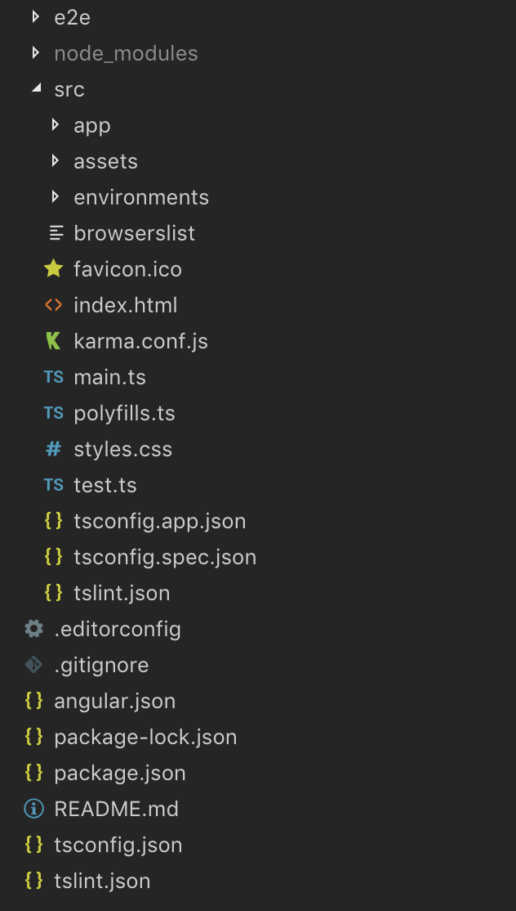

<div class="container-fluid">
  <div class="row mt-3">
    <div class="col-sm-3">
      
    </div>
    <div class="col-sm-9">
      <div class="jumbotron">
        <h3>Estructura de un proyecto Angular</h3>
        <ul class="list-unstyled">
          <li><span class="text-primary font-weight-bold">e2e: </span><span class="text-muted"> </span></li>
          <li><span class="text-primary font-weight-bold">node_modules: </span> <span class="text-muted"> Carpeta donde
              se encuentran todas las dependencias de nuestro proyecto.</span></li>
          <li>
            <span class="text-primary font-weight-bold">src:</span> <span class="text-muted"> Carpeta donde tenemos el
              código de nuestra aplicación.</span>
            <ul>
              <li><span class="text-primary font-weight-bold">app:</span><span class="text-muted"> En esta carpeta nos
                  encontramos nuestros modulos, componentes, servicios, pipes...</span></li>
              <li><span class="text-primary font-weight-bold">assets: </span><span class="text-muted"> Contenido
                  estatico, sobretodo imagenes.</span></li>
              <li><span class="text-primary font-weight-bold">enviroments: </span><span class="text-muted"> En esta
                  carpeta se definen los diferentes entornos en los que vamos a compilar nuestra app.</span></li>
              <li><span class="text-primary font-weight-bold">browserlist: </span><span class="text-muted"> Soporte a
                  navegadores de nuestra app.</span></li>
              <li><span class="text-primary font-weight-bold">favicon.ico: </span><span class="text-muted"> Favicon de
                  nuestra app.</span></li>
              <li><span class="text-primary font-weight-bold">index.html: </span><span class="text-muted"> Página
                  inicial que se usa como trigger o puerta de entrada a nuestra app.</span></li>
              <li><span class="text-primary font-weight-bold">karma.conf.js: </span><span class="text-muted">
                  Configuración de Karma</span></li>
              <li><span class="text-primary font-weight-bold">main.ts: </span><span class="text-muted"> Arrancador de la
                  aplicacion Angular.</span></li>
              <li><span class="text-primary font-weight-bold">polyfills.ts: </span><span class="text-muted"> </span>
              </li>
              <li><span class="text-primary font-weight-bold">styles.css: </span><span class="text-muted"> Estilos
                  generales de todo el proyecto.</span></li>
              <li><span class="text-primary font-weight-bold">test.ts: </span><span class="text-muted"> Test de la
                  app</span></li>
              <li><span class="text-primary font-weight-bold">tsconfig.app.json: </span><span class="text-muted">
                </span></li>
              <li><span class="text-primary font-weight-bold">tsconfig.spec.json: </span><span class="text-muted">
                </span></li>
              <li><span class="text-primary font-weight-bold">tslisnt.json: </span><span class="text-muted"> </span>
              </li>
            </ul>
          </li>
          <li><span class="text-primary font-weight-bold">.gitignore: </span><span class="text-muted"> Archivo que
              elimina ciertos archivos/carpetas de la sincronización con git</span></li>
          <li><span class="text-primary font-weight-bold">angular.json: </span><span class="text-muted"> Configuración
              de nuestra app.</span></li>
          <li><span class="text-primary font-weight-bold">package.json: </span><span class="text-muted"> Dependencias de
              nuestro proyecto.</span></li>
          <li><span class="text-primary font-weight-bold">tsconfig.json: </span><span class="text-muted"> </span></li>
          <li><span class="text-primary font-weight-bold">tslint.json: </span><span class="text-muted"> </span></li>
        </ul>
      </div>
    </div>
  </div>
</div>
    
